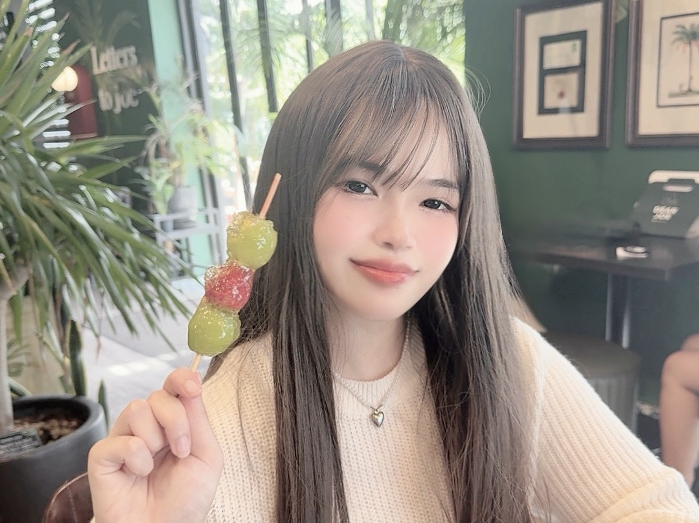

Hey there, I'm Cav!
I work as a freelance motion graphics designer with an academic background in Multimedia Studies at the University of the Philippines Open University.
For as long as I can remember, I've always enjoyed doing things that let me bring out my creativity. To be honest, I am a 'little bit of this, little bit of that' type of person, but I strive to be skilled at anything I do.